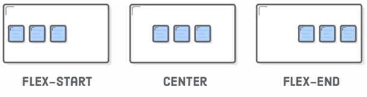
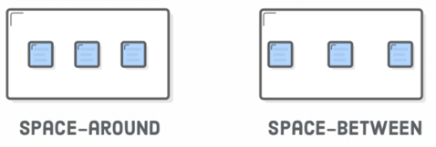
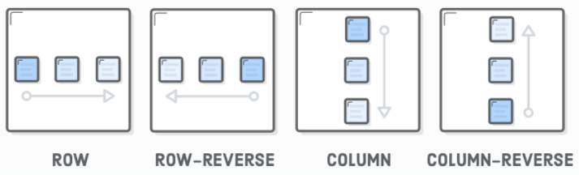
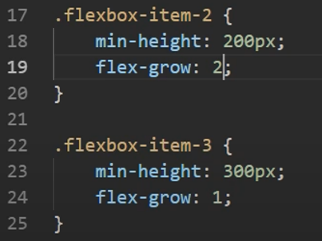

Flexing about Flexbox
CSS FlexBox
- The "FlexBox" layout mode offers an alternative to Floats for defining the webpage.
- Floats had been the only option for laying out webpages for a very long time.
- Flexbox can give us full control of the webpage, like alignment, direction, etc.
- Flex box uses 2 new box types:
- Flex Containers
- Flex Items
Click here for an example.
- One of the biggest advantages is that we can manipulates the placement of the flex
by styling the flex container.

- By default, the flex container acts as a row shown to the right
- Using flex-direction: column; sets the main axis vertical and the cross axis horizontal.
- If we want to style the main axis elements, then we would use the justify-content property.
- Flex-start is the default value. The sets the flex items to be at the start of the axis
2 More Examples of justify-content:


An Example Of Flex Directions:

Styling Flex Items
- Flex items shrink when the screen size gets smaller, but won't expand whenever possible.
- If we want our items to be "wrapped
' in mulitple lines, and then set this property to flex container.
You can also use flex-shrink and flex-grow to changes those properties.
We can also set flex-grow: 1 on mulitple kines.

Doing this means that the space will be divided unequallt.